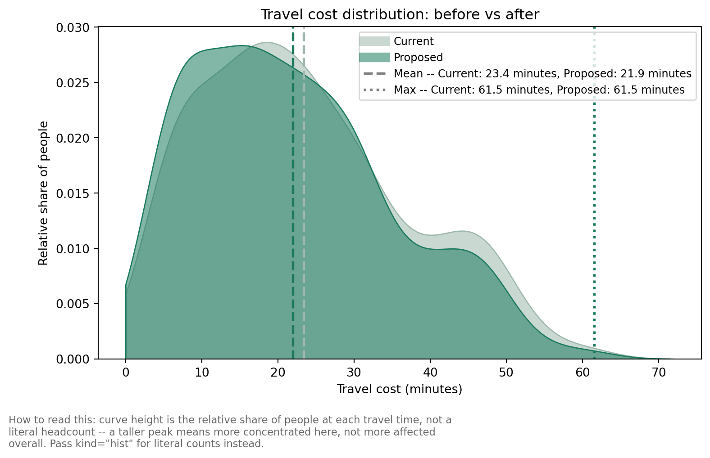

weighted_average is a demand-weighted mean travel time over the whole region. That makes it a good headline metric for comparing candidate solutions overall, but it can also hide what is actually going on: a new site can produce a large, genuine improvement for a specific area, and still barely move the region-wide average, because everyone else who is unaffected by it gets averaged in too.
As in the other Devon CDC examples, we register the existing sites (flagged required_sites_col="Existing", so they’re never dropped from a solution), the travel matrix, and region geometry. Here we weight by the MF50-84 column of the demand data – population aged 50-84 – since that’s the cohort this example’s headline number is about.
We also register IMD (Index of Multiple Deprivation) decile via add_equity_data(), with disadvantaged_end="low" since decile 1 is the most deprived 10% of LSOAs. This isn’t used to change the optimisation here – it unlocks the equity-band breakdown of population impact later in this example.
from lokigi.site import SiteProblemproblem = SiteProblem()problem.add_sites("../../../sample_data/devon_cdcs.csv", candidate_id_col="Facility_Name", vertical_geometry_col="Latitude", horizontal_geometry_col="Longitude", required_sites_col="Existing", )problem.add_region_geometry_layer("../../../sample_data/LSOA_Devon_2021_EW_BSC_V4.gpkg", common_col="LSOA21NM" )problem.add_travel_matrix( travel_matrix_df="../../../sample_data/travel_matrix_car_devon_cdcs.csv", source_col="from_id", unit="minutes", )problem.add_demand("../../../sample_data/demand_MF_50_84.csv", demand_col="MF50-84", location_id_col="LSOA 2021 Name" )problem.add_equity_data("../../../sample_data/devon_imd_2025_2021_LSOAs.csv", equity_col="Index of Multiple Deprivation (IMD) Decile (where 1 is most deprived 10% of LSOA", common_col="LSOA name (2021)", label="IMD decile", disadvantaged_end="low", )
Guessed CRS: EPSG:4326 (Values fall within longitude/latitude bounds)
Building a baseline
evaluate_baseline() evaluates one named set of sites directly – with no arguments, it defaults to whichever sites are flagged via required_sites_col, i.e. the current network. It returns a one-solution SiteSolutionSet, so everything that works on a solved solution (plotting, site_allocation_summary(), and now population_impact_summary()) works on a baseline too.
That’s a small shift – easy to read as “the new site barely matters”. SolutionComparator.population_impact_summary() diffs the two solutions per LSOA instead of just comparing the region-wide average, treating set_a as the baseline and set_b as the candidate.
demand_improved/demand_worsened/demand_unchanged are people; regions_improved/regions_worsened/regions_unchanged are LSOAs. Everything is reported as a positive magnitude – direction is carried by the bucket name, not the sign.
population_impact_phrase() turns that dict straight into a stakeholder-facing sentence. Its “% of the cohort” figure is a share of whatever was registered via add_demand() – here, the 519,493 people aged 50-84 across Devon (total_demand above), not the whole population.
print(comparator.population_impact_phrase())
46,907 people (9.0% of the cohort) get a shorter journey, averaging 16.1 minutes off. 61 of 729 regions improved; 0 worsened; 668 unchanged. In the most disadvantaged third of areas, 8.9% of people see a shorter journey, compared to 4.2% in the least disadvantaged third.
Who actually benefits? Splitting by deprivation band
46,907 people improving is the headline, but it doesn’t say who. Two candidates can post the same region-wide improvement while one concentrates its benefit in already-well-served areas and the other reaches the most deprived communities proportionally more – population_impact_summary() alone can’t distinguish them. population_impact_by_equity_group() reuses the same baseline-vs-candidate diff, split by the equity band registered via add_equity_data().
Index of Multiple Deprivation (IMD) Decile (where 1 is most deprived 10% of LSOA
1
1861.0
17978.0
0.103515
0.0
2
2627.0
32190.0
0.081609
0.0
3
4182.0
46735.0
0.089483
0.0
4
13461.0
85152.0
0.158082
0.0
5
8276.0
83520.0
0.099090
0.0
6
6576.0
72667.0
0.090495
0.0
7
4571.0
53950.0
0.084727
0.0
8
3709.0
63418.0
0.058485
0.0
9
1644.0
44508.0
0.036937
0.0
10
0.0
19375.0
0.000000
0.0
proportion_of_band_improved is the rate-normalised figure that actually matters here: the share of that band’s own population who improved, not the share of the region-wide improved-total that happened to live in that band. A larger band can look like it “benefits most” on a raw headcount alone even if only a small fraction of it actually improved – the rate is what’s comparable across bands of different sizes.
plot_population_impact_by_equity_group() shows this for every band at once, ordered most- to least-disadvantaged, and deliberately plots the worsened rate alongside the improved rate – a benefits-only chart could hide a candidate that helps most areas while making some disadvantaged ones worse off.
Now that equity data is registered, population_impact_phrase() automatically adds a rate-normalised sentence – and would add a further clause about the most disadvantaged tertile getting worse journeys too, if that were ever non-zero.
print(comparator.population_impact_phrase())
46,907 people (9.0% of the cohort) get a shorter journey, averaging 16.1 minutes off. 61 of 729 regions improved; 0 worsened; 668 unchanged. In the most disadvantaged third of areas, 8.9% of people see a shorter journey, compared to 4.2% in the least disadvantaged third.
Seeing the dilution
SolutionComparator.plot_population_impact_summary() plots the two numbers side by side: a small shift in the region-wide average sits on top of a real, concentrated local effect.
The bar charts above answer “how many, how much” and “how did the average move” – but they still collapse each LSOA down to a single improved/unchanged bucket. plot_population_impact_histogram() shows the full before/after distribution instead, weighted by population, with the two sides’ weighted mean and maximum travel cost marked for reference.
By default it draws a smoothed kernel density estimate (kind="kde") rather than a binned histogram, since two overlaid KDE curves are usually easier to compare by eye than two sets of overlapping bars – pass kind="hist" for the traditional binned version instead.
comparator.plot_population_impact_histogram();

Who’s left behind? Absolute headcounts beyond a threshold
max (the single worst-case travel time) is one data point – it doesn’t say how many people are in that tail, or whether a candidate touches them at all. beyond_thresholds reports the actual headcount beyond one or more cutoffs, alongside the existing threshold_for_coverage (which reports who’s within a cutoff, the opposite direction).
These are nested/cumulative tiers, not independent buckets – don’t sum them.
The people beyond 30 or 45 minutes drop substantially – but the >60-minute tier doesn’t move at all. max alone would show this as “worst-case unchanged”; the headcount shows it as “this candidate does nothing for this specific group of people”, which is the more policy-relevant framing.
Every candidate at once, via solve(baseline=...)
Building and diffing one candidate at a time is fine for a single “what if we add this site?” question. To get the same columns automatically on every row of an enumerated solve(), pass the baseline in directly – it’s evaluated once, not once per candidate.
Every row above is scored against the same baseline, so demand_improved, mean_reduction_among_improved, and demand_beyond_threshold_60 are directly comparable across candidates – not just the region-wide weighted_average ranking.